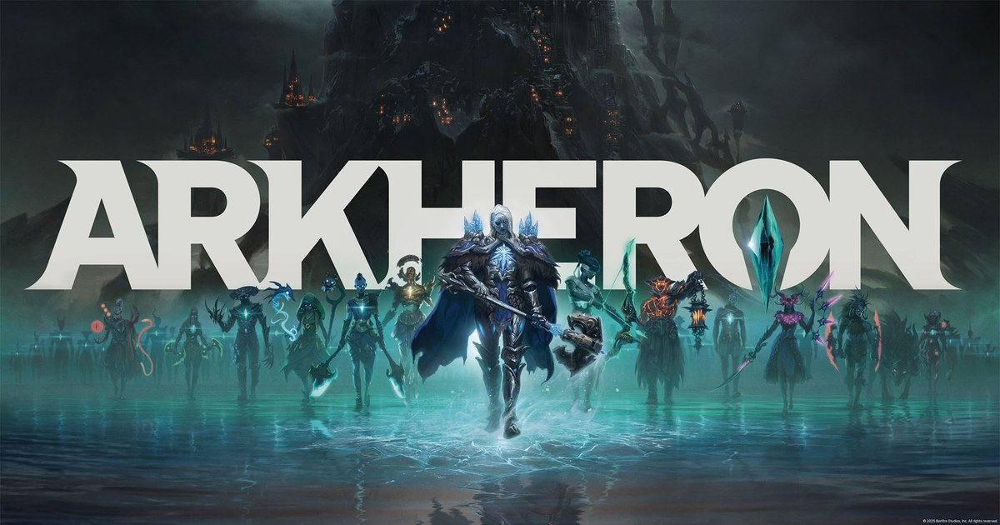

Arkheron is out now — the ex-Blizzard team's ten-year PvP project hits Early Access
Bonfire Studios' team-based PvP game launched in Early Access today on Steam, PlayStation 5, and Xbox Series X|S — and everyone can play the full game free all weekend.

Ten years of work is finally playable. Arkheron, the debut game from Bonfire Studios, entered Early Access today, November 27, on Steam, PlayStation 5, and Xbox Series X|S with crossplay — and the studio is throwing the doors open: everyone can play the full game free over the opening weekend, November 27–29, no purchase needed.
Bonfire is the studio founded by Blizzard veteran Rob Pardo, the former chief creative officer behind Diablo, Overwatch, StarCraft, and World of Warcraft. Arkheron is its first game, and it launched live on the show floor at DreamHack Stockholm, with 84 PC stations running it all weekend.
What Arkheron actually is
Arkheron is a fast-paced, isometric team PvP game. Teams of three fight their way up a mysterious Tower, collecting items mid-match that reshape their builds on the fly, and taking on rival teams along the way. The pitch is Diablo-style action with a build-crafting twist: the loot you grab changes how you play, every match.
The Early Access version costs $24.99 on Steam, with a $49.99 Supporter Edition for players who want to back the studio further. Bonfire has said every Collection — its version of a battle pass — will be earnable for free during Early Access. From early 2027, the game will run in Books of about six months, each split into three roughly two-month Chapters, with the Eternal roster changing every Chapter.
How to play free this weekend
There are three ways in without paying. The opening weekend, November 27–29, is free for everyone with no limits. A free Friend Pass lets your friends join you if you own the game. And Xbox Game Pass Ultimate and PC Game Pass subscribers get the full game in Game Preview for the first three months. Anyone who buys any edition by December 1 gets the Armored Swan Pack free.
Why this one matters
New PvP games live or die on their first weekend, and Bonfire is doing everything it can to lower the barrier: free weekend, free friends, Game Pass from day one. The pedigree is real — Pardo's team built some of the most-played games ever made — but Arkheron is an unproven new IP in a genre that chews up new arrivals. This weekend is the test: if the Tower hooks people while it's free, Bonfire has a foundation. If it doesn't, the ten-year build becomes a much harder story to tell.
Sources: Arkheron enters early access on PC and consoles on November 27 (GamesBeat) · Arkheron Is Out Now: Early Access Price and Free Weekend (iGameMag) · Arkheron Early Access Launches Live at DreamHack Stockholm (Dot Esports) · Arkheron (Game Preview) (Xbox)
Gear up: Razer — mice, keyboards, headsets and laptops.